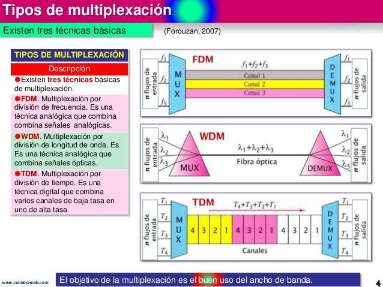
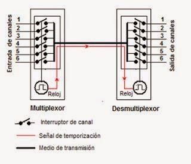

Introducción
La multiplexación permite transmitir múltiples señales a través de un solo medio físico. Según Forouzan, es clave para aprovechar al máximo la capacidad del canal.
Desarrollo
Existen distintos tipos de multiplexación, cada uno basado en un principio diferente. Stallings destaca que estas técnicas aumentan la eficiencia del sistema.


Conclusión
En conclusión, la multiplexación es esencial para soportar múltiples comunicaciones simultáneas.